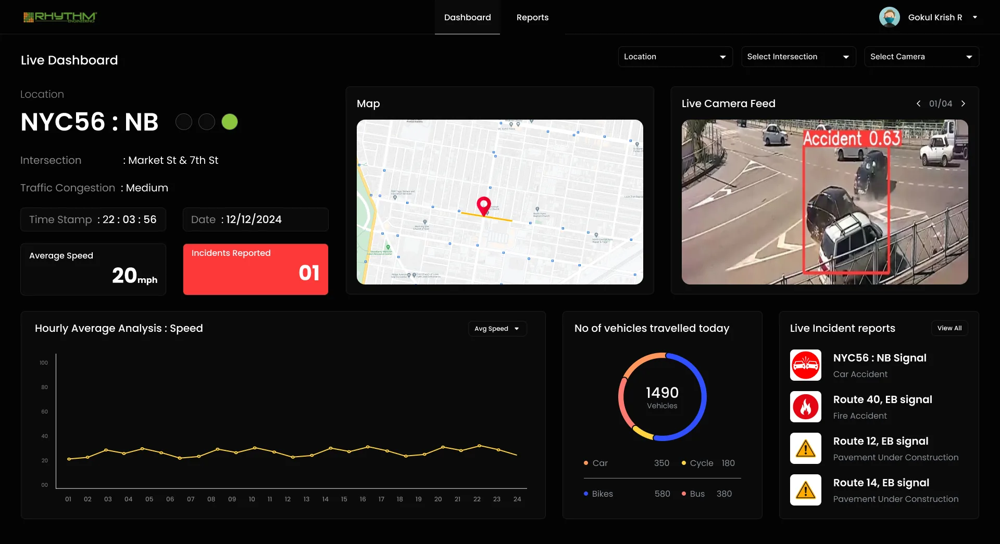

← All work
Traffic Monitoring
A 24-hour sprint designing a real-time traffic incident dashboard for city authorities.

01About the project
The task was to design a user interface for a Traffic Monitoring Dashboard that enables real-time monitoring and reporting of traffic incidents. The dashboard needed to be intuitive, visually appealing, and efficient for traffic management authorities to quickly assess situations and make decisions.
02Design objectives
- Real-time Monitoring : Display live data including traffic speed, incidents, and congestion levels.
- Incident Reporting : Provide a mechanism for users to view detailed reports of incidents.
- User Profile Management : Enable users to manage their profiles with ease.
- Theme Customization : Offer options for users to switch between themes to enhance user experience in various environments.
03Live dashboard
Monitor traffic data in real time :
- Location & Traffic Information : Displays current location, intersection details, and traffic congestion status
- Map View : Provides a visual representation of the monitored area
- Live Camera Feed : Streams live footage from traffic cameras with AI-powered incident detection
- Traffic Metrics : Shows average speed and number of vehicles traveled.
04Incident reports
To view and manage detailed reports of traffic incidents.
- Incident Data : Includes information such as incident ID, type, congestion level, severity, timestamp, and status#
- Camera Feed Links : Direct links to camera footage corresponding to the incident.
- Filter Options : Users can filter incidents by date, type, and location.
05User profile management
To allow users to manage their profiles and preferences.
- Profile Information: Fields for users to input and edit their name, email, and phone number.
- Theme Selection: Users can switch between light and dark themes based on their preference.